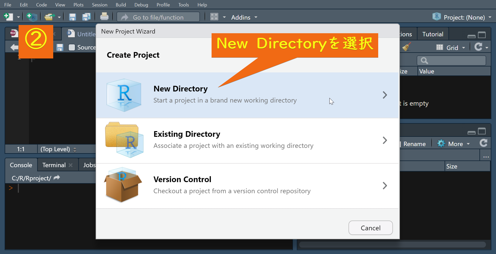
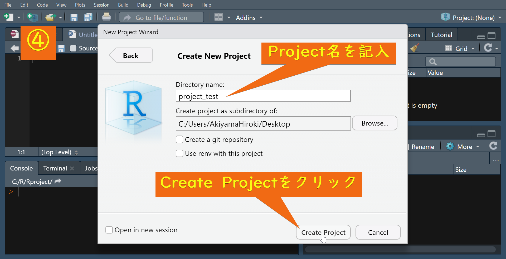
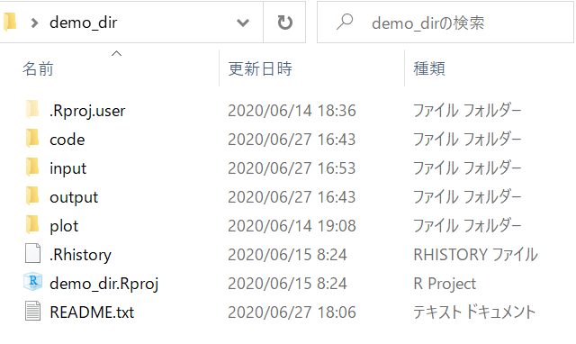
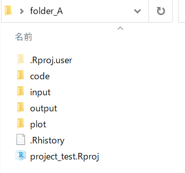
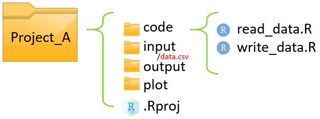

データ研磨スキル
[導入編]
2021/02/20
本資料について
対象読者
- 「データエンジニアリング養成演習」受講者
- 滋賀大学×帝国データバンクの集中講義
目安となるスキルレベル
- Rに標準搭載されている関数でデータの前処理ができる
- Rを用いたデータ分析の結果について、発表経験がある
目的
TDBの集中講義では、Rに標準搭載されている関数を中心に前処理を行ってきましたが、ここではパッケージの活用による、さらなる効率化・汎用化を目指します。
Rの強み
- Rには豊富なパッケージが用意されています
- 中でも、近年ではHadley Wichkamらが開発したtidyverseというパッケージが注目され、急速に普及しています
- パッケージを使わずにRでプログラミングを行うことは、石でマンモスを狩っていることに等しいです
- tidyverseという強力な武器を使わない手はありません
構成
- 導入編
- 初級編前半
- 初級編後半
- 中級編前半
- 中級編後半
- 上級編（執筆中）
- 付録（執筆中）
Python版も執筆中
到達目標
初級編
- データの読込から結合、集計などのデータ研磨を行い、データの出力までを自由にできるようになる

中級編
- 複数ファイルに対して効率的な処理を実行できる
- 与えられた指標算出ロジックを実装できる
- 基本的なデータの可視化を実行できる


上級
- 目的に合致した処理を行えるパッケージを適宜探索・活用することができる
- 並列処理などを用いて、大規模データに対しても効率的な処理を行うことができる
- 自ら関数などを作成して、汎用的なプログラムなどを作成することができる
- データベースなどの基盤技術に関する知識を習得する
導入編の内容
導入編では、初級編・中級編を学ぶ上で必要となる前提知識について説明します
- tidyverseパッケージ
- tibbleデータフレーム
- パイプ演算子 %>%
- プロジェクトとは
- ディレクトリ(フォルダ)構成とは
- hereパッケージ
tidyverse
現代でRを使うなら必需品！！
tidyverseとは
- データサイエンス向けに設計されたRパッケージのコレクションの総称です
- tidyverseに含まれているパッケージは、すべて統一的な記法やデータ構造を扱うように設計されています
- tidyverseをインストールして読み込むことで、以下を含むパッケージ群をまとめて使用できるようになります
- dplyr
- tibble
- tidyr
- ggplot2
- readr
- purrr
tidyverse公式HP（https://www.tidyverse.org/）
なぜtidyverseを使うのか
- 処理が速い
- 可読性が高い
- 統一的な記法で書ける
- コーディングの生産性が上がる
などなど、さまざまな理由があります。
tidyverseのインストールと読込
- install.packagesの実行は一度だけでOKです
- 一度実行すればPCにインストールされます。R（Rstudio）起動時に毎回実行する必要はありません
- libraryはインストールされているパッケージを読み込む操作です。
- R（Rstudio）を起動するたびに実行する必要があります
tibble
tidyverseで扱うdata.frame
tibbleとは
- ユーザーフレンドリーなデータフレームです
- 基本的には通常のdata.frameと変わりません
- tibbleの方が、データの表示方法がスマートです
- tidyverseでは基本的にtibbleを扱います
- data.frameとtibbleを比較してみましょう
- カラム\(x\)に1から50までの数字が入ったデータを作成します
- data.frameをdat_df、tibbleをdat_tbとします
コンソール表示の比較
tibbleではデータの次元数とカラム型が表示され、表示件数が10行までになります。見やすいです！
x
1 1
2 2
3 3
4 4
5 5
6 6
7 7
8 8
9 9
10 10
11 11
12 12
13 13
14 14
15 15
16 16
17 17
18 18
19 19
20 20
21 21
22 22
23 23
24 24
25 25
26 26
27 27
28 28
29 29
30 30
31 31
32 32
33 33
34 34
35 35
36 36
37 37
38 38
39 39
40 40
41 41
42 42
43 43
44 44
45 45
46 46
47 47
48 48
49 49
50 50パイプ演算子 %>%
コーディングの強力な味方
パイプ演算子とは
- %>% これがパイプ演算子です
- %>% のまえの出力を、%>% のうしろの関数の第一引数に渡します
- パイプを使う例と使わない例を見てみましょう
- データの先頭3行を見たいとき、通常なら左のように書きます
- パイプ演算子%>%を使うと、右のように書くことができます
パイプ演算子のメリット
- 途中経過を変数に代入する必要がない
- スクリプトの削減
- メモリの節約
- 関数の入れ子構造を避けられる
- 直観的に操作・理解しやすく可読性が高い
これらのメリットを、例を通して確認してみましょう。
たとえば、次のような処理をすることを考えます。
例：dat_tbの先頭5行の合計値（15）を算出する
# A tibble: 5 x 1
x
<int>
1 1
2 2
3 3
4 4
5 5パイプを使わない方法
パイプを使う方法
[1] 15パイプのコツ
- %>%が長く連続するときは、%>%の後ろで改行を挟むと可読性が高くなります
- また、%>%で流れてきた前のデータは「.」で表現できるので、引数を明示して書くことも可能です。パイプ前を第一引数以外に渡したいときに有効です
[1] 15パイプを使わないと…
[1] 15- このようなコードがたくさん書かれていると、コードを読み解いていくのに労力がかかります
- 「短いコードを書くこと」よりも「理解しやすいコードを書くこと」を意識しましょう
- パイプは理解しやすいコードを書くための1つの手段です
パイプ演算子のショートカットコマンド
- Windows：「Ctrl + Shift + M」
- Mac：「Cmd + Option + M」
参考
- 初級編で使用するdplyrの主な関数一覧をテーブルにまとめました
- これらの関数は全てtibbleを第一引数に要求します
- 関数の返り値も、全てtibbleです
- 従ってこれらの関数をパイプで繋げることができます
| 関数 | 操作 |
|---|---|
| bind_rows(cols) | データを縦(横)結合 |
| distinct | データの重複を消去 |
| select | データの変数選択 |
| left_join | データのjoin |
| filter | データの条件抽出 |
| arrange | データのソート |
| mutate | データのカラム定義 |
プロジェクト
全てはプロジェクトから始まる…
プロジェクトとは
- A社のデータ研磨、B社のデータ研磨、というように、案件の最も大きなくくりのことをプロジェクトと呼びます
- プロジェクトごとにフォルダを1つ作成します
- フォルダ下は統一されたディレクトリ構成(後述)を持つことが望ましいです

R project
- プロジェクトはIDE(統合開発環境)などによって呼び名が変わります。例えばRstudioではProject、VScodeではworkspaceなどと呼ばれます
- しかし、呼び名が変われど、プロジェクトやディレクトリ構成の考え方は変わりません
- プロジェクトフォルダの直下にProjectファイルを作成することで、そのフォルダがプロジェクトフォルダであることをIDEに認識させます
では、実際にRstudioでProjectを作成してみましょう。
今回はプロジェクトフォルダとProjectファイルを同時に作成します。
R projectの作成
①から④の手順に従ってR Projectを作成します。




R projectが作成されると次のような画面が開きます。

ExplorerからR projectを起動することもできます。

R projectの利点
- Rstudio終了時のscriptのタブを維持できる
- 起動時の作業ディレクトリ(working directory)がProjectファイルのある場所になる
- gitによるバージョン管理が容易になる
- プロジェクトごとにRstudioの設定を保存しておくことができる
R projectでのgitによるバージョン管理は、付録で説明する予定です。
ディレクトリ(フォルダ)構成
サルでもわかる構成を！
ディレクトリ構成とは
- 文字通り、ディレクトリの構成のことです
- ディレクトリ構成を事前に定義しておくと、個人にとっても複数人にとっても有益な事がたくさんあります
- たとえば、demo_dirというプロジェクトのディレクトリ構成が右下図のようになっているとします

demo_dirのディレクトリ構成詳細
青字はフォルダです

| フォルダ | 中身 |
|---|---|
| . | ルートディレクトリ(demo_dir) |
| code | .Rファイルなどの研磨スクリプト |
| input | 生データやマスタデータ |
| output | 中間ファイルや研磨後データ |
| plot | データの可視化をしたプロット |
| ファイル | 内容 |
|---|---|
| README.txt | 最初に読んでほしい文書。構成や備忘録などを記述 |
| demo_dir.Rproj | プロジェクトファイル |
ディレクトリ構成を定義するメリット
- 以下の3点のようなメリットが挙げられます
- 情報が整理されていると効率的に作業ができる
- プロジェクトが変わっても、基本のディレクトリ構成が変わらなければ、プロジェクト間の移行が容易になる
- ディレクトリ構成がわかりやすく統一されていると、誰が見てもすぐに、どこに何があるかがわかる
上記3点目に関して、次のスライドのような事例を見てみましょう。
ディレクトリ構成の事例
folder_A

folder_B

両フォルダとも中身は同じですがフォルダ名が少し異なります。 フォルダ名は統一されている方が共有がしやすいです。 本資料ではfolder_Aのような構成で進めます。
here
pathの悩みから解放されるために
hereパッケージとは
- hereはpathの悩みを解消してくれるパッケージです
- hereを使えば、R projectファイルがある場所を起点(ルートディレクトリ)としてpathを書くことができます
- 異なるOS/個人間のプロジェクト共有が容易になります
はじめにpathの悩み事例を紹介し、
次に視覚的にそれを説明し、
最後にhere関数の使用方法を説明します。
pathの悩みの具体例
よくある悩みとして、以下の3つのような事例があります。
- OSによってpathのルートなどが異なる
- Mac: /Users/ユーザー名/Desktop/
- Windows: C:/Users/ユーザー名/Desktop/
- 個人間でユーザー名が異なるので絶対pathが異なる
- 鈴木さんPC: C:/Users/suzuki/Desktop/
- 佐藤さんPC: C:/Users/tanaka/Desktop/
- 作業ディレクトリが異なるので参照の相対pathが異なる
- C:/Users/suzuki/Desktop/Project_A/
- C:/Users/suzuki/Desktop/Project_A/code/
このような場合、プロジェクトを共有した際にプログラムのpathを書き換える必要が生じます。
hereによる悩みの解消
hereを使えば、先ほどのような悩みはすべて解消します。
- OSによってpathのルートなどが異なる
- Mac: /Users/ユーザー名/Desktop/
- Windows: C:/Users/ユーザー名/Desktop/
- R projectファイルのある場所をルートとするので問題なし
- 個人間でユーザー名が異なるので絶対pathも異なる
- 鈴木さんPC: C:/Users/suzuki/Desktop/
- 佐藤さんPC: C:/Users/tanaka/Desktop/
- 上と同様の理由で問題なし
- 作業ディレクトリが異なるので参照の相対pathが異なる
- C:/Users/suzuki/Desktop/Project_A/
- C:/Users/suzuki/Desktop/Project_A/code/
- ルートとディレクトリ構成が揃えば、相対pathを使う必要がない
悩み事例の視覚的説明
- 先ほどの事例を視覚的に説明します
- 下図のように、Project_Aというプロジェクトフォルダが鈴木さんのWindowsのDesktop上にあるとします
- このとき、読み込みたいデータdata.csvまでの絶対pathは以下のようになります
C:/Users/Suzuki/Desktop/Project_A/input/data.csv
異なるOS/個人間によるpath相違の解消
- Windowsユーザーの鈴木さんが作成したProject_Aを、Macユーザーの田中さんが受け取りました。
- 田中さんはProject_AをDocumentsに置きました
- dataまでの絶対pathは以下のように変更が必要です
変更前 C:/Users/Suzuki/Desktop/Project_A/input/data.csv
変更後 /Users/Tanaka/Documents/Project_A/input/data.csvhereを使ったpath
- 前頁で絶対pathの変更を示しましたが、Project_A以下に関しては変える必要がありませんでした
- つまり、Project_Aがルートディレクトリになってくれるとpathの変更が必要なくなるということです
- これを実現してくれるのがhereです
hereの使い方
- hereを読み込むと、ルートディレクトリが設定された場所(.Rprojがある場所)がメッセージで表示されます
here() starts at C:/Users/ユーザー名/Desktop/Project_A- 以下のようにしてhereを使うことで、.Rprojがある場所を起点にしてpathを書くことができます
C:/Users/ユーザー名/Desktop/Project_A/input/data.csv- プロジェクトが起点になるため、プロジェクトフォルダを共有した際、pathを書き換える必要がなくなります
- 異なるOS間でのpathの齟齬も解消されます
- 以上の理由から、本資料ではhereを使用しています
"C:/Users/ユーザー名/Desktop/Project_A/input/data.csv"helpファイルの開き方
- 困ったらhelp
コードが動かないときの対処法
- コーディングで困ったら次の順番で対処しましょう
- １．errorをちゃんと読む
- ２．helpファイルを見る
- ３．ネットで調べる
- errorはちゃんと読みましょう
- helpファイルとは、関数の意味や引数の説明が書かれているもので、実装例なども書かれています
- 大抵の場合は１, ２で解決します
- ３でも解決しない場合はデキル人に聞きましょう
- １,３は説明不要なので、次頁では ２のhelpファイルの開き方について説明します
“？関数名”でhelp
- helpファイルを開くには、helpを見たい関数の頭に?マークを付けて実行します
- 関数の括弧はあってもなくても大丈夫です
- help(関数名)としても同様です
- Rstudioでは右下のHelp paneでhelpファイルが見れます
クォーテーションの使いわけ
- " ダブルクォート
- ’ シングルクォート
- ` バッククォート
クォートを使うとき
- 基本的に、Rのコードでクォートを使用するのは文字列を入力するときです
- たとえば以下のようにnに数値の100を代入した状態で、「n」と「“n”」を表示します
- nでは代入された100が表示されますが、“n”では数値100ではなく、文字列nが表示されています
ダブルクォート・シングルクォート
- ダブルクォートとシングルクォートのどちらを使用するかは、基本的には個人の好みです
- 混在するとややこしいので、統一はしましょう
- 覚えておく必要があるのは文字列の中にクォートを含めたい場合で、以下のどちらかで対応します
バッククォート
- バッククォートは、非標準的な文字列やカラム名などを扱う際に使用します
- 非標準的な文字列やカラム名とは、括弧を含む文字列や、数字で始まるカラム名などのことです
- なぜシングル・ダブルクォートではだめなのか、具体例で確認していきます
- たとえば次のようなデータ(df)があるとします
# A tibble: 3 x 3
`1` 売上 `売上(千円)`
<int> <int> <int>
1 1 4 7
2 2 5 8
3 3 6 9括弧つきカラムの参照
- dfのカラムを$記号で参照すると、括弧つきのカラムでエラーが出てしまいました
- 売上(千円)が関数として認識されてしまったからです
- 括弧つきカラムはバッククォートで囲みましょう
非標準文字列は必ずバッククォートを使用
- 実は先ほどの例ではdf$“売上(千円)”でも対応可能でした
- しかし、以下の例のようにダブルクォートでは対応できない場合もしばしばあるので、非標準文字列は必ずバッククォートを使用すると決めておきましょう
例)col_3に、(col_1)の値でなく文字列“(col_1)”が代入された
おわり
導入編は以上になります。
著者
- 秋山浩希
- 滋賀大学大学院データサイエンス研究科 修士2回生
DEMLセンター員
- 滋賀大学大学院データサイエンス研究科 修士2回生
- 大里隆也
- 滋賀大学 特任助教, (株)帝国データバンク
- 菊川康彬
- (株)帝国データバンク